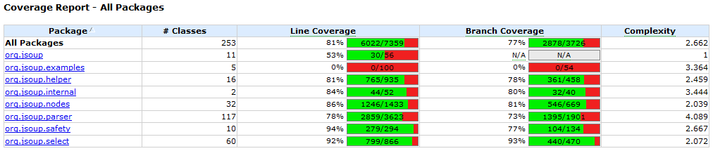

Homework 4: Generating Tests with EvoSuite Due Wednesday, February 21, 2024, 11:59PM AoE
In this assignment you will use tools to automatically create a high-coverage test suite for a program.
You may work with a partner for this assignment.
Start Early
Professors often exhort students to start assignments early. Many students wait until the night before and then complete the assignments anyway. Students thus learn to ignore “start early” suggestions. This is not that sort of suggestion.
Warning: the tools take hours!
The tools you must use for this assignment literally take multiple hours to run. Some students reported that it took over 14 hours to run! (However, others were able to finish in about five minutes. Regardless of when you finish, everything is fine.) Even if you are fast and can finish your work at the last minute, the tools are not and can not. On a high-powered multi-core rack-mounted RAID-storage test machine it took 1.25 hours to run the EvoSuite tool. However, as soon as you get enough data (see below) you can stop early (just press Ctrl-C).
However, once running, the tools are completely automated. Thus, you can start them running overnight, sleep and ignore them, and wake up to results. This means that even though the assignment may not take hours of your active personal attention, you must start it days before the due date to be able to complete it in time. (Unfortunately, there is no way to resume an interrupted EvoSuite session without restarting it from the beginning, so be careful about laptop power and the like.)
Installing, Compiling and Running Legacy Code
It is your responsibility to download, compile, and run the subject programs in this assignment (and the other assignments in this course). Getting the code to work is part of the assignment. You can post on the forum for help and compare notes bemoaning various architectures (e.g., windows vs. mac vs. linux, etc.). Ultimately, however, it is your responsibility to read the documentation for these programs and utilities and use some elbow grease to make them work.
Subject Program and Tool: JSoup (Java) + EvoSuite
The subject program is jsoup (v 1.11.2), a library for extracting real-world HTML data using DOM, CSS and jquery-like methods. A copy of the version of the source code known to work for this assignment is available here; you can also use git clone https://github.com/jhy/jsoup.git. It involves about 18,000 lines of code spread over 60 files. This program is a bit small for this course, but comes with a rich existing test suite. This existing test suite will serve as a baseline for comparison
The associated test input (and oracle!) generation tool is EvoSuite, version 1.0.5. Mirror copies of evosuite-1.0.5.jar and evosuite-standalone-runtime-1.0.5.jar are available, but you should visit the project webpage for documentation.
EvoSuite generates unit tests (cf. JUnit) for Java programs.
JSoup Installation Details
You can install jsoup and use cobertura to assess the statement and branch coverage of its built-in test suite (note that you may need to install Maven to run mvn):
$ unzip jsoup-1.11.2.zip
$ cd jsoup-master/
$ mvn cobertura:cobertura
...
[INFO] Cobertura: Saved information on 253 classes.
Results :
Tests run: 648, Failures: 0, Errors: 0, Skipped: 11
...
[INFO] Cobertura Report generation was successful.
[INFO]
------------------------------------------------------------------------
[INFO] BUILD SUCCESS
$ firefox target/site/cobertura/index.html # this probably won't work on EC2

Note that the supplied test suite is of high quality, with around 81% line coverage and 77% branch coverage overall. (If your coverage numbers are different, you are still fine. If you have a different number of classes you are fine.)
In some cases (such as students using Amazon EC2), you may find it difficult to view the HTML report (although you can use a command-line browser like elinks, which is discussed in the video linked from HW0, if you’d like). In that case students report that it is often easiest to copy the entire directory back to your local machine and view it there (e.g., scp -r, see HW0 for more information on scp. You might also consider learning rsync.).
EvoSuite Installation and Use Details
EvoSuite includes some clear tutorials explaining its use. Mirror copies of hamcrest-core-1.3.jar and junit-4.12.jar are available if you need them.
Once you have EvoSuite installed you can invoke it on jsoup via:
$ cd jsoup-master
$ $EVOSUITE -criterion branch -target target/classes/
...
* Writing JUnit test case 'ListLinks_ESTest' to evosuite-tests
* Done!
* Computation finished
You can now find the EvoSuite tests in evosuite-tests/org/jsoup. In the report you are asked to compare the coverage of the developer-provided test suite to the EvoSuite-created test suite. One simple and common way to do this is by inspecting the evosuite-reports/statistics.csv file. However, you are also welcome to try integrating other coverage tools, such as clover or cobertura, with Maven, but this is not required (and may be tricky).
Submission: Written Report
You must create a written PDF report reflecting on your experiences with automatic test generation. You must include your name and NJIT email id (as well as your partner’s name and email id, if applicable). In particular (rubric notes are in []s):
Look at
evosuite-report/statistics.csvand compare it totarget/site/cobertura/index.html. In a few sentences, compare and contrast the branch coverage of the manually-created test suite to the EvoSuite-created test suite. [2 points for a comparison that does more than just list numbers]Choose one class for which EvoSuite produced higher coverage than the human tests (if no such class exists, choose EvoSuite’s “best” class). Look at the corresponding tests. (You will have to look carefully at the automatically- and manually-generated tests to answer this question.) In one paragraph, indicate the class and explain the discrepancy. For example, in your own words, what is EvoSuite testing that the humans did not? Why is EvoSuite more likely to generate such a test? What do you think of the quality of the tests? The readability? Suppose a test failed. Would the test’s failure help you find the bug? [4 points for a convincing analysis that shows actual insight]
Choose one class for which EvoSuite produced lower coverage than the human tests (if no such class exists, choose EvoSuite’s “worst” class). Elaborate and reflect as above, but also offer a hypothesis for why EvoSuite was unable to produce such a test: bring in your knowledge of how EvoSuite works. [4 points for an analysis that shows insight, especially into EvoSuite’s limitations]
In one paragraph, your report should compare and contrast your observations (e.g., usability, efficacy, test quality) of AFL (from HW3) and EvoSuite. List at least one strength of each tool and at least one area for improvement. Which software engineering projects might benefit from the use of such tools? Would you use them personally? Why or why not? [1 point for AFL strengths and weaknesses, 1 point for EvoSuite strengths and weaknesses, 3 points for insightful analysis]
Although we do not have explicit formatting guidelines that we require you to follow, is is easier for the graders to interpret text that is presented clearly. We encourage you to format your results in a manner that you think would simplify reading later. (One way to double-check would be to write your report draft and then step back for a few minutes and then re-read the text or have your partner re-read the text.)
This does not have to be a formal report; you need only answer the questions in the rubric. However, nothing bad happens if you include extra formality (e.g., sections, topic sentences, etc.).
There is no explicit format (e.g., for headings or citations) required. For example, you may either use an essay structure or a point-by-point list of question answers.
The grading staff may select a small number of excerpts from particularly high-quality or instructive reports and share them with the class. If your report is selected you will receive extra credit.
For this assignment the written report is the primary artifact. There are no programmatic artifacts to submit (however, you will need to run the tools to create the required information for the report).
FAQ and Troubleshooting
Question: Cobertura suggests that the project has 3,726 branches, but EvoSuite seems to think they sum up to 5,149 (or 4,985, or any other number). What gives?
Answer: Good observation! Everything is fine. Consider how the two tools might be implemented differently. What are some ways in which two tools could disagree about the number of “branches” in the same Java classes?
- Question: After I extract the archive and cd into my jsoup directory, I run
mvn cobertura:cobertura. However, it doesn’t successfully compile:,COMPILATION ERROR: /home/.../jsoup/nodes/Element.java incompatible types: java.util.ArrayList...cannot be converted to java.util.ArrayListDo I need to manually edit my files?
Answer: No, you do not need to edit your files. This is most likely because your version of maven is compiling with jdk-9. First, verify this with
$ mvn -version. Then, run$ sudo update-alternatives --config javato set your version to jdk-8. Note the path as well tojava-8-openjdk-amd64(which should show up as one of the options). Then export theJAVA_HOMEpath as follows:$ export JAVA_HOME=/path/to/java-8-openjdk-amd64. Try to recompile and it should work now. Some students report that this Stack Overflow link and this explanation may be helpful for resolving this on a Mac. - Question: When trying to run EvoSuite, I get:
-criterion: command not foundAnswer: This almost always indicates some sort of typo in your
export EVOSUITE=...setup line. Question: Can I terminatie EvoSuite and resume it later?
Answer: Unfortunately, no. An instructor emailed the author who indicated that this is not currenltly possible.
Question: What does “interesting” mean for the report? Similarly, how should we “elaborate” or “reflect”?
Answer: We sympathize with students who are concerned that their grades may not reflect their mastery of the material. Being conscientious is a good trait for CS in general and SE in particular. However, this is not a calculus class. Software engineering involves judgment calls. I am not asking you to compute the derivatives of various polynomials (for which there is one known right answer). You are carrying out activities that are indicative of SE practices.
Suppose you are tasked with evaluating a test generation tool for your company. You are asked to do a pilot study evaluating such a tool and prepare a report for your boss. One of the things the boss wants to know is: “What are the risks associated with using such a tool?” Similarly for the benefits or rewards.